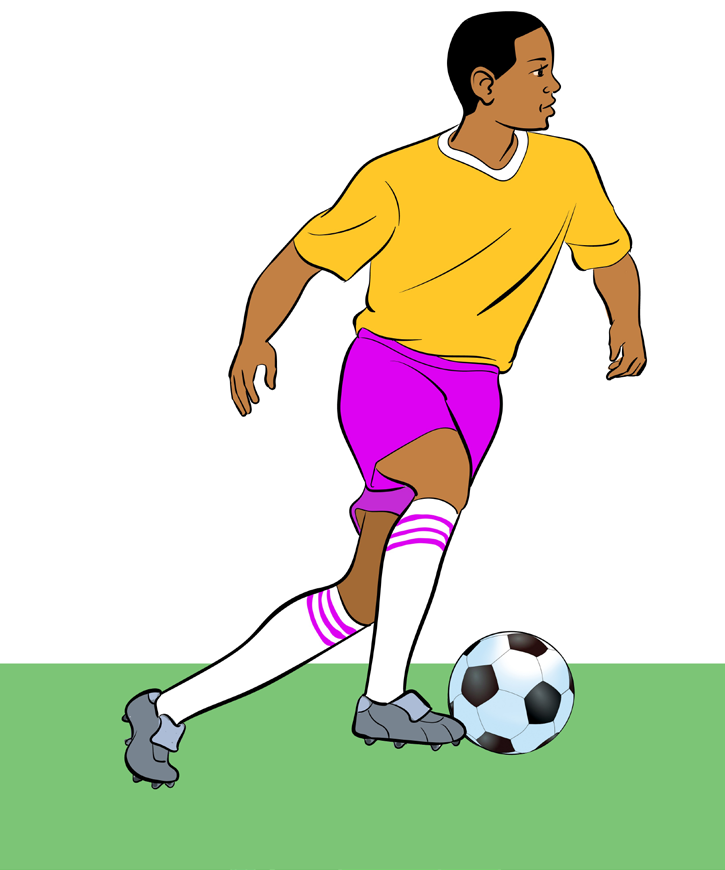

Dribbling
This is a skill of moving with the ball by touching it frequently with both inside and outside of the foot. Its intention is to prevent the opponent to intercept the ball. Follow these steps to perform dribbling:
(i)
Make a gentle touch with the ball;
(ii)
Keep the ball close to your feet, as shown in Figure 4.10;
(iii)
Keep the leading edge of your foot forward as you are running;
(iv)
Keep the ball at the bottom of your peripheral vision; and
(v)
As you proceed, keep changing the pace.

Heading
It is a football technique that is used to control, pass, shoot or clear the ball. Heading can be done by standing, jumping, bending or diving positions. For successful heading consider the following:
Activity 4.10
Using various drills, practise dribbling repetitively to master the skill.
Question:
What happens if you fail to keep the ball close to your feet?